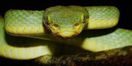

Extend Yourself - Vernier Science: Measure Temperature
 Choose an Activity
Choose an Activity
- Go further with your experiments. What cups are the worst insulators? If you did Cold as Ice, try melting other substances in the cold water. If you did the Baggie Mittens experiment, try other insulation materials.
- Create a tutorial to help other students use Vernier Go Temp! sensor or Logger Lite software.
- Create your own temperature experiment. Track the change between the beginning and ending temperatures. Did the temperature increase or decrease? Why did this happen?
- Go online to learn more about how a Galileo thermometer works.
- In this lesson, we learned that humans have temperature sensors called thermoreceptors. Many snakes, like pit vipers, have specialized temperature sensors called pit organs that sense temperature differently. Go online to learn more!
